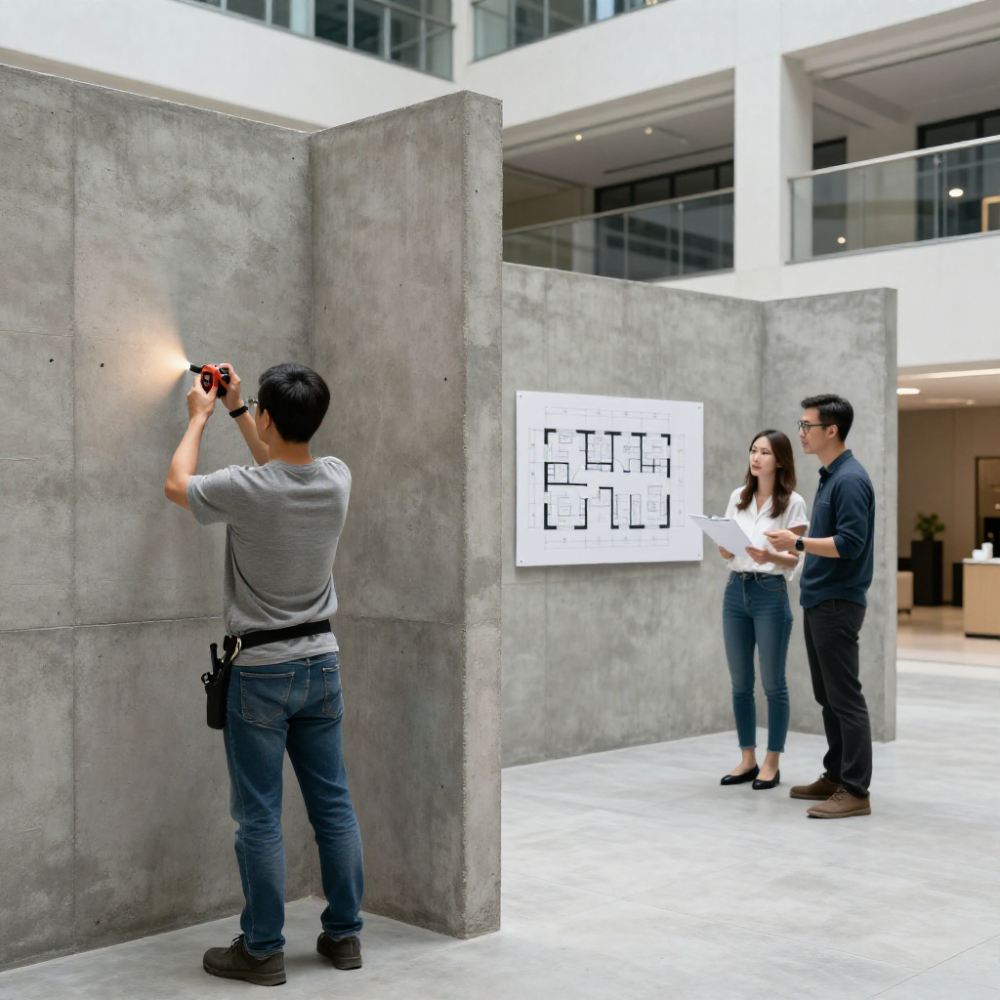
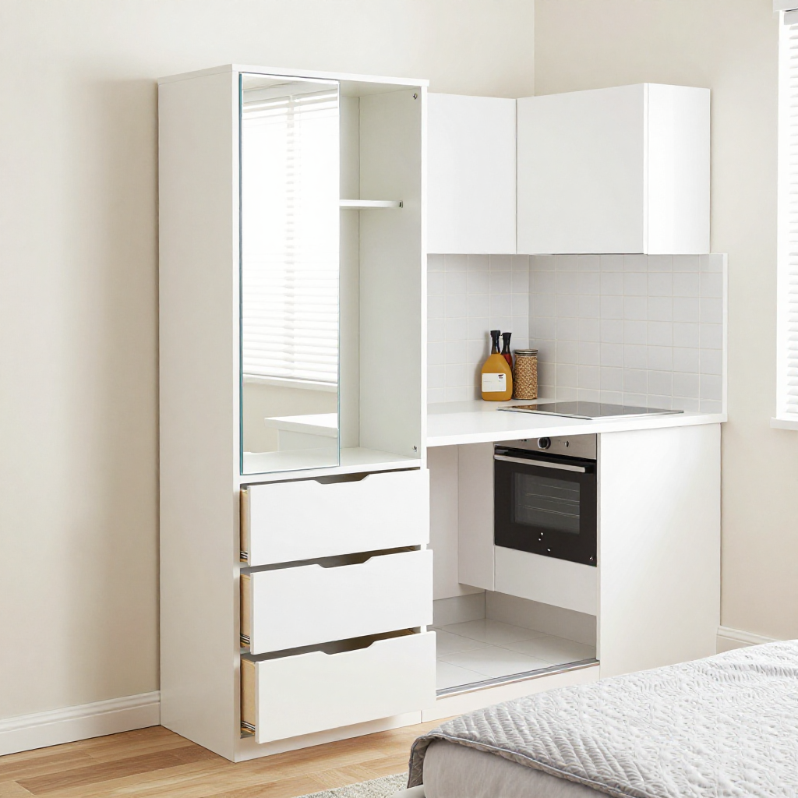
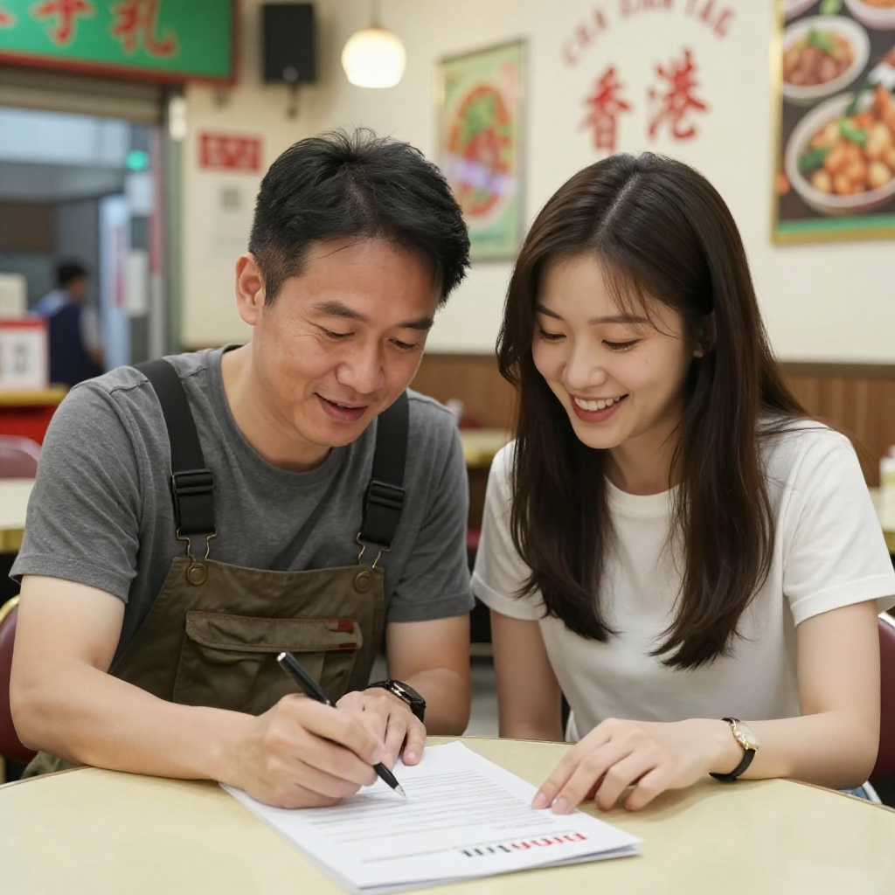

300呎偷出三房：張丹楓接納米樓訂造訂單全屋定制攻略

📍 場景：觀塘280呎納米樓｜主講：張丹楓（8年全屋定制）｜設計溝通：雲蕾｜老師傅：陳永強（26年經驗）｜WhatsApp 報價：852 5190 2328
序幕：黃生嘅280呎難題——點樣住一家人？
我係張丹楓，做咗8年裝修，專做香港小戶型定制家具。今日觀塘一間茶餐廳，坐我對面嘅黃生三十出頭，深圳跨境金融返嚟，今年初舉家搬到香港。一手揸住杯凍檸茶，一手拎住張單位平面圖：「陳師傅，你睇下，長九米、闊三米一，實用面積280呎。我老婆話要有小朋友房，我自己要有書房，老人家每季過嚟住一兩個月，最好仲有間客房。你話，點搞？」
我跟埋26年經驗嘅老師傅陳永強師傅一齊上門，佢最擅長幫人「偷位」。
第一幕：開放式單位逐寸量——兩房半方案
返到黃生嗰個280呎單位，陳師傅攞住激光尺逐寸度牆。開放式單位好處係冇主力牆間隔壞，可以成個重新規劃。
「黃生，你而家個單位，如果用傳統方法擺現成傢俬，最多做到一房一廳。但如果你肯全屋訂造，我可以幫你做到兩房半——書房用半開放式趟門，老人家嚟嘅時候拉上趟門就變獨立客房，唔使嗰陣再封個膠囊床。」
「咁都得？」
「我哋行內有個術語，叫『偷位』。即係將每一寸空間都用盡。」

第二幕：四大偷位神器——床底櫃、樓梯櫃、鏡櫃、L形枱
陳師傅同我哋逐一介紹「偷位」設計：
「第一樣：床底收納。訂造床架下面做三個大抽屜，深25厘米，可以擺成箱雜物、被鋪、行李箱。第二樣：樓梯櫃。有上床下櫃嘅設計，樓梯每一級都係櫃桶，唔使浪費。」
「第三樣：玄關鏡櫃。門口訂造到頂鏡櫃，入門換鞋、掛袋、整理儀容，一個位搞掂三件事。第四樣：L形廚房枱。280呎單位廚房好細，L形枱可以同時切菜、煮飯、擺電飯煲，仲可以加個摺疊枱面，需要時變二人餐桌。」
「師傅，咁訂造傢俬用咩板材好？」
「香港天氣潮，唔好用普通纖維板，一兩年就發脹。我哋標配係E0級多層實木夾板，環保又防潮。如果預算鬆動少少，可以升級到愛格板——德國入口，表面耐磨耐刮，細路仔喺上面畫嘢都唔怕。」

第三幕：廁所乾濕分離——兩層防水最關鍵
黃太問：「師傅，廁所呢？香港裝修最怕就係防水。」
「香港廁所細，仲要做乾濕分離。最緊要係做兩層防水——第一層係英泥彈泥，加兩層玻璃纖維網；第二層係面層防水砂漿。再加個企缸擋水條同防滑磚。我做過嘅單位，十幾年都唔會漏水。」
「陳師傅，我哋呢啲新香港人，錢冇本地人咁多，但肯畀心機喺裝修度。等五年之後我哋一定換大屋！」

尾聲：政府五年規劃與我哋嘅日常
政府五年規劃提到要提升單位面積，但對我哋呢啲師傅嚟說，每一日，我哋都喺度幫香港人——無論本地人定新來港嘅人才——將300呎活成800呎嘅幸福感。
政府規劃寫嘅係政策方向，但對我哋裝修佬嚟說，係生意信號——代表納米樓仲會繼續存在，代表訂造傢俬嘅市場仲有好長嘅路。
呢個，就係全屋定制嘅意義。
❓ 納米樓裝修三問
Q1：280呎真係可以做到三間房？
做到兩房半：主人房上床下櫃、書房半開放式趟門（老人家來時變客房）、細路仔區用高架地台加磨砂玻璃間隔。三間不可能，但「兩房半」綽綽有餘。
Q2：上床下櫃安全嗎？小朋友跳會唔會塌？
龍骨用2x4杉木每30公分一條、底板18mm夾板、面板12mm高密度板，承重超過800kg，兩個細路跳到幾時都冇問題。記得加防潮墊。
Q3：香港廁所防水點做先最穩陣？
兩層防水：第一層英泥彈泥加兩層玻璃纖維網，第二層面層防水砂漿。再加企缸擋水條同防滑磚。呢個做法，十幾年都唔會漏水。
提示：圖片為 Z-Image-Turbo AI 生成的場景示意圖，不是實際住戶單位。